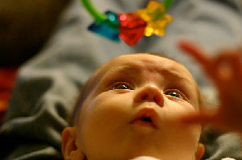

How to Find Baby Learning Toys
to Conquer Milestones
If you're going to buy toys for your infant, why not choose baby learning toys that will stimulate his brain and encourage milestone growth?
 Some toys provide more brain-boosts than others.
Some toys provide more brain-boosts than others.
The key is knowing which are which. {by Maessive}
Think about this: you're ze mama and for a very short window, junior is completely helpless.
This means you should enjoy your status as Ultimate Supreme Dictator of Everything and mandate that the fairy dust of learning be sprinkled all over that little fuzzy mini-cranium as much as possible.
This article is going to help you identify the skills your baby is currently trying to master, and the toys that will help him conquer them faster.
I will lay out, milestone by milestone, which skills are on the learning table. That way you can find (and hit Grandma up) for the toys that will give you the most for your brain-boosting-buck.
Science has proven that the brain connections that are used...stay used. And those that are not...get deleted. It's the same at birth...at 30...at 70.
So help your baby use the right connections over and over again and be astonished at how quickly she blooms from rolling to running.
This particular article is going to focus on those milestones being checked off from birth until around 3-4 months old.
If your baby is older than 3 months, or has already mastered these skills (GENIUS I TELL YOU!), click on the ages below to see what other brain-boosting toys you should keep an eye out for.
The best baby learning toys for 3 to 6 month olds
The best baby learning toys for 6 to 9 month olds
The best baby learning toys for 9 to 12 month olds
For a free checklist of all the milestones to use at home, download my Milestone Marker.
Baby Learning Toys for
Increasing Neck Strength
Learning how to hold up the head is the first step in conquering the major muscle groups.
From this seemingly simple skill, your infant gains the upper body strength to sit up, then to crawl, then to walk, and then to run chaotically all over the house!
Most babies H.A.T.E. tummy-time. Why? It usually has very little pay-off. Either lift up your head, or eat carpet. Not too motivating.
Yes, he can actually enjoy tummy-time.
It's possible!
You can place the odd-baby-toy on the floor in front of him, yes. That may work.
My kids never fell for that "Look there's a rattle! Now you're having fun!" trick.
Try these full-tummy-sized toys instead.
He'll be so excited to look around that he won't even notice the neck muscles straining.
Jumbo Wheel Playspace
The Jumbo Wheel Playspace won the Oppenheim Toy Award in 2010 for being a "best catch". Why?It's stimulating, but not overwhelming.
It's machine washable, which is important because at some point he's going to throw up on it.
It fits nicely in the diaper bag for trips.
A newer version of this play mat was the Spin and Explore Sea Gym. It has a little (detachable) tummy-seat that lets your baby spin all the way around. Not only does it build neck strength, but it helps build arm coordination!
Wavy Water Mat
I fell in love with this Water-Free Water Mat instantly.
It has water, but it's contained. This means no mess. She can slap those little pockets of fluid all day and I have no clothes to change, no floor to mop. Nice!
Baby Learning Toys for
Eye Coordination
Ever notice how newborns will look cross-eyed? Isabella's left eye would go all wonky sometimes.
Her older sisters (and parents, to be honest) thought it was hilarious.
Good thing she got those eye muscles trained, or I'd feel pretty bad about now...
By giving your newborn something to track with her eyes, you're helping her learn how to move both eyes at the same time.
The best way to do this is to provide some kind of a mobile for her to watch.
A Mobile for the Ceiling
My absolute favorite mobile is the one you never have to take down. This sea turtle projects animals and stars on the ceiling.
It doesn't rotate, but the characters flash one at a time, requiring your baby to move her eyes to view the next picture.
Bella is 20 months now, and still points at hers with a stern "Mama", if it looks like I'm going to forget to turn it on.
The Decorative Non-Standard Mobile
Honestly, you can pick up a standard plastic mobile pretty much anywhere.
If, however, you're looking for a mobile that blends function with style, you're up for a challenge. UNLESS YOU'RE READING THIS!
*Sweeping in with a cape*
Feast your eyes on these stylish alternatives to the standard boring 'ole Tiny Love mobiles!
Baby Learning Toys for
Building the R...e...a...c...h For It Skill
Eventually, your little precious is going to figure out that she can make those long skinny things on either side of her torso move.

Movement is pretty darn exciting, isn't it!
{by spamily}
Staring at something can be fun. But do you know what's really fun?
Grabbing it.
And then *deep breath* bringing it to the mouth and slobbering all over it.
That, my friend, is heaven.
Encourage that desire to conquer by placing baby learning toys just within reach. (Just outside reach comes later.)
True, you could hang your husband's gym socks from the car seat and your infant will probably reach for it. But the goal is to reach and then receive.
The end goal of reaching for gym socks is a mouth full of gym socks. And those things taste horrible. (Don't ask me how I know this.)
You want your child to keep reaching, so don't ruin the first attempt with a really bad aftertaste. Here are some toys worth reaching for.
Adventures in Playplace
The Playplace has received countless awards over the years, including Dr. Toy's Best Products, the National Parenting Seal of Approval, and the Mom-Tested Choice from Parenting Magazine.
Why so many claps-on-the-back?
It can be used for more than just tummy and reach time. Sitting and crawling babies enjoy it as well.
It has detachable toys that can be re-used as crib toys
It has an extra large mirror (vanity is a good thing when you're a baby).
It comes in pink, for a more feminine experience.
Reaching Toys on the Cheap
So what happens if you can't cough up the dinero for a playplace? Are you stuck with gym socks?
Nope. Look for brightly colored toys and hang them up with some plastic rings. It's easy.
But if you're still not sure, here are a few of my girls' favorites.
The Low-Down in Spotting
Good Baby Learning Toys
When it comes to finding good baby learning toys for your little Einstein, here's a summary of what you're looking for.
The first skill he'll need to master is head control. Look for fun toys to make tummy-time more enjoyable, and less of a scream-fest. Honestly, if he's going to scream the whole time, what are the chances you'll put him on his tummy to practice? Hmmmm?
The second milestone to master is eye coordination. Not only does a good mobile provide him with opportunities to practice, it also serves as a soother to help him in your efforts to sleep train.
 Those little hands are a highway to learning
Those little hands are a highway to learning
The third developmental step to conquer is the reaching skill. Beyond the physical work of reaching out the arm, opening the fingers and then closing them again on his conquest, reaching helps train the brain and hand to work together.
As your considering toys for your newborn, keep these milestones in mind and ask yourself: Does this toy help growing brain skills? Or is just pretty to look at?
Happy browsing!
Is Your Baby Older than 3 Months?
The Secret to Finding Great Toys for Sitters ages 3-6 Months
How to Make Educational Toys Fun for Crawlers 6-9 Months Old
Top 10 Toys for Increasing Motor Skills in Waddlers ages 9 Months and Up


 7 Ways to Determine an Ear Infection
7 Ways to Determine an Ear Infection
 5 Tips to Fight the Cold Crusties
5 Tips to Fight the Cold Crusties
 Free $32 Nursing Cover with code ONEFREE!
Free $32 Nursing Cover with code ONEFREE!

 Does a Belly Binder help C-Section Recovery?
Does a Belly Binder help C-Section Recovery?
 This Month's Coupon Codes for Gap, Children's Place, and Others
This Month's Coupon Codes for Gap, Children's Place, and Others

I just subscribed to the site, and I'm very happy I did. I have worked in the medical field for several years and love to have good resources for when things come up...
~ Crystal S.
What a great site and thanks for having it available!
~ Bernadette W.
I'm very excited to start receiving the newsletter. I've checked out your site a couple times and I loooovve how it's arranged, your language, and tips - it's great!
~ Emily N.
Heather, I can't express how happy I am I discovered your site!
~ Liza T.
Thank you Heather, for your wonderful newsletter. There is always something new!
~ Desiree T.
I'm a 1st time young mom, 23 and single, so I have found very very helpful...I can't seem to stop myself telling everyone I know about you, some thought you were my mom!
~ Vuyiswa N.
Your website is very helpful and I discovered a couple of great online stores. 'Cause I'm not a big reader, it is very nice that I can find the most important information through your
website.
~ Tonya G.
Thanks Heather! Your Milestone eBook is SO detailed and so correct. My son is doing all or most of the things and many are not mentioned in the usual books/sites. Great job and keep it up!
~ Anwesha C.
Thanks so much for creating such an AWESOME website. I really appreciate your sense of humor and real writing style.
~ Andrea Z.
My baby refused all bottles until you showed me the MAM bottle. Thank you so much for the recommendation. I wouldn't have known about them if not for your website.
~ Jennifer at Sweet Lilly Confections


Copyright © 2007-2011. All rights reserved.
Remember...when in doubt, give Doc a shout!
New! Comments
Have your say about what you just read! Leave me a comment in the box below.